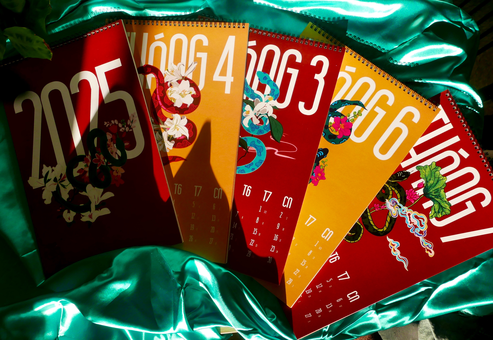
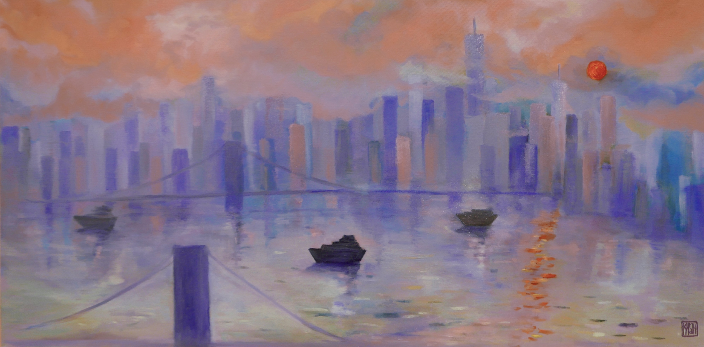
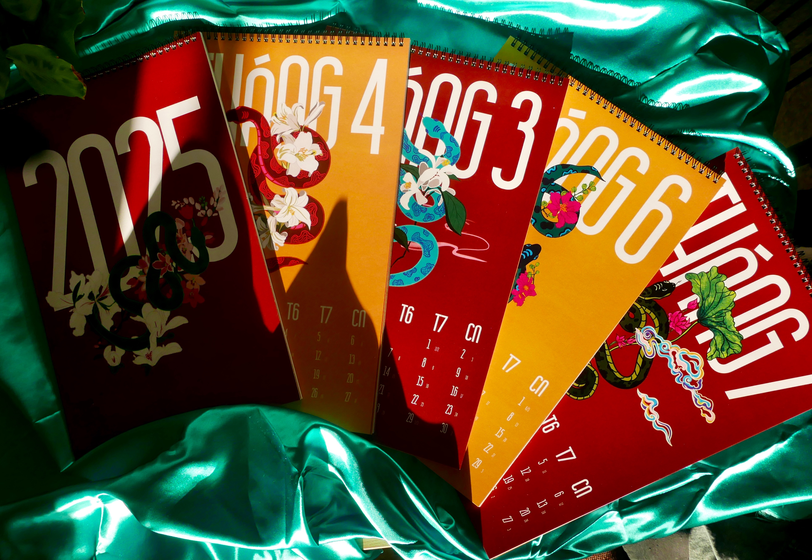
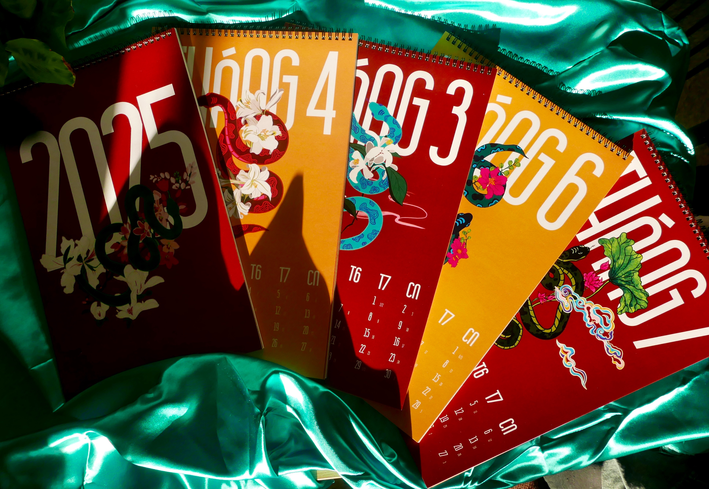
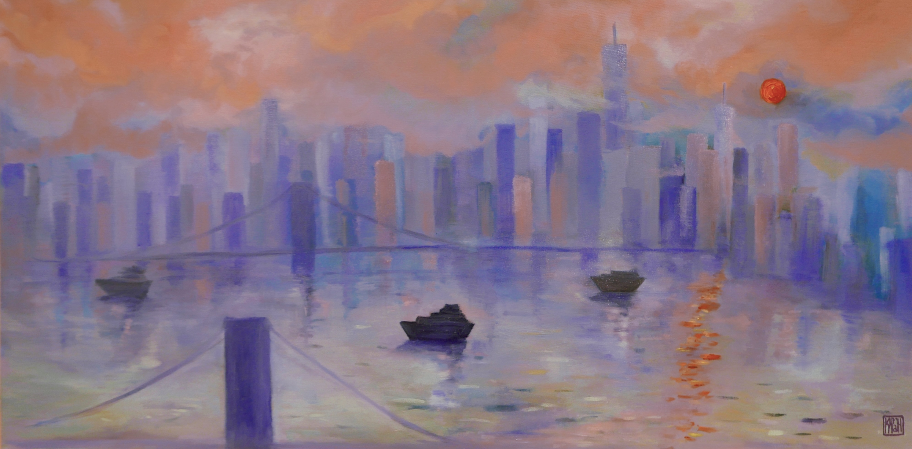
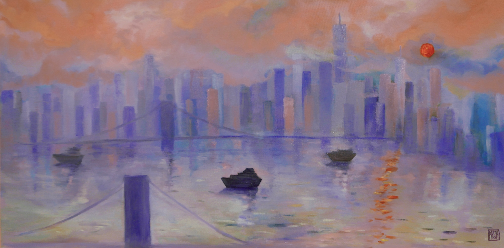

[ UNZIP ]
[ events ]
[ contact ]
KHANH
PHAN
Khanh Phan is a graphic designer with a strong focus on editorial, branding, and UI/UX design, currently based in New York City. She has been studying Communication Design at Parsons School of Design since 2023.
Branding
Editorial
UI/UX
Fine Arts




 



 
